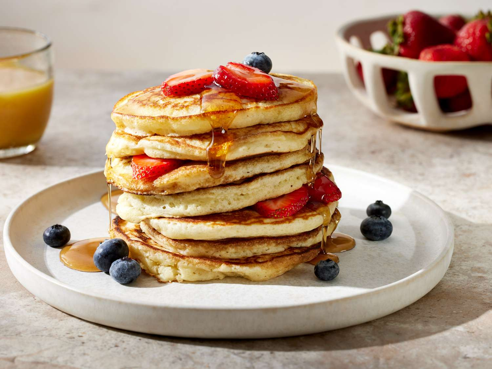

Pancakes

Description
Fluffy pancakes perfect for breakfast, topped with butter, syrup, or fresh
fruits.
Ingredients
- 1 cup all-purpose flour
- 1 tablespoon sugar
- 1 teaspoon baking powder
- 1/2 teaspoon salt
- 1 cup milk
- 1 egg
- 2 tablespoons melted butter
Steps
- In a bowl, mix flour, sugar, baking powder, and salt.
- In another bowl, whisk milk, egg, and melted butter.
- Combine wet and dry ingredients and mix until smooth.
-
Heat a griddle or non-stick pan over medium heat and lightly grease it.
- Pour 1/4 cup batter for each pancake and cook until bubbles form.
- Flip and cook until golden brown.
- Serve warm with your favorite toppings.